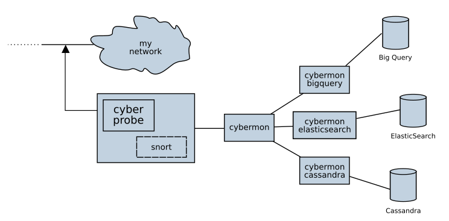

This is the manual for Cyberprobe (version 0.81, 24 January 2017).
Cyberprobe is a distrbuted architecture for real-time monitoring of networks against attack. This has applications in network monitoring, intrusion detection, forensic analysis, and as a defensive platform during an attack.
The software consists of a number of components, including:
These components can be used together or separately. For a simple configuration, they can be run on the same host, for more complex environments, a number of probes can feed a single monitor. For more detail, and to see where we are going, read the Architecture page.
Note: FIXME: This manual page is slightly out-of-date, and needs to cover the visualisation components.
Note: FIXME: Architecture diagram needs an update.
Next: Obtaining the software, Previous: Top, Up: Top [Index]
Cyberprobe is a distrbuted architecture for real-time monitoring of networks against attack. The software consists of a number of components, including:
These components can be used together or separately. For a simple configuration, they can be run on the same host, for more complex environments, a number of probes can feed a single monitor. For more detail, and to see where we are going, read the Architecture page.
The probe, cyberprobe has the following features:
The monitor tool, cybermon has the following features:
The cybermon software is a bit of a work-in-progress at the moment, and needs more protocols added, but there’s enough capability to be useful, and to demonstrate the value of this architecture.
The code is targeted at the Linux platform, although it is generic enough to be applicable to other UN*X-like platforms.
The easiest way to learn about the software is to follow our Quick Start tutorial.
Cyberprobe started out as a research tool to study networked applications to find out what they were doing, as we all know how software suppliers sometimes like to add some "extras" to their software :). So, a simple tool to configure how packets are captured from a network was produced. But as you are probably aware, the biggest threat to the safety of your information is from outside of your network. Thus, the ability to trigger collection of packets upon detection of a Snort rule hit was added.
Snort is a powerful IDS system which studies packets on your network, analyses them against a set of signatures and creates logs and alerts. We felt there was a need to harness the Snort alerts, but use them to trigger collection and forwarding of packets from the address which caused the alert.
You may be asking why you’d want to use Cyberprobe? After all, monitoring networks with tcpdump and Snort and collecting alerts and packet data for analysis is a straightforward process for many networks. However, real-time analysis is not possible if everything is file based. Collecting the data and forwarding over the network to a central collection point allows for a much more "industrialised" approach to intrusion detection. If you detect an attack attempt, and then observe vast quantities of data leaving your network from the credit card accounts database, then you know you need to act quickly.
You need flexibility about how you monitor for network attacks. There isn’t a one-size-fits-all solution. Attackers are ingenious in their approach to attacking your network, so you need to have a flexible, configurable monitoring tool to develop your defences.
There’s a war coming... The enemy is resourceful, they can use your networks and systems as their own weapon. But with the right tools, you can prepare a defence. It’s time to get ready for Cybermaggedon.
Cyberprobe releases:
0.80Added optional TLS support for packet streams to cyberprobe and cybermon. This change refactors the cybermon command line interface. See documentation for new command line options.
0.79Socket closure fix.
0.76Make UUIDs unique.
0.74Cassanda subscriber support.
0.71Fixes.
0.70Added ZeroMQ pub/sub support, with subscribers for ElasticSearch, Gaffer, Google BigQuery.
0.63ElasticSearch integration brought up to latest ES verison. Cybermon Gaffer integration work completed to point of release.
0.62Source-code updated to work with latest dependencies, operating systems and compiler versions. Early Gaffer integration.
0.61Fixed HTTP crashing problem in cybermon.
0.60IP address matching now permits specification of a mask. Documentation improved, regression suite added, a few unit tests starting to form.
0.55Packages released for Debian, Fedora and Centos, documentation re-worked into info and man formats.
0.50ElasticSearch integration improved to get a much tighter integration with Kibana for a network dashboard. Also bug-fixes for memory management / lock problems.
0.40Now includes prototype STIX support: A TAXII server allows distrubution of threat information, and a TAXII client can read indicator information and store in a way that cybermon can use.
0.30The build process now uses the GNU toolset. It detects the LUA interface and can compile against LUA 5.1 and 5.2. Successfully compiled on a MacBook!
0.25Added SMTP and FTP capability. Also added a primitive mechanism to visualise network observations.
0.20HTTP and DNS protocol capability. TCP reset and DNS packet forgery added. Major overhaul of the LUA language interface.
0.12Cybermon utility is configurable using LUA.
0.11Added basic cybermon utility.
0.10Added management interface.
0.9First release on SourceForge.
Next: Quick start tutorial, Previous: Overview, Up: Top [Index]
The code doesn’t have many dependencies. Exotic dependencies are:
libpcap.
tcpdump - not needed to build the software, but we use it in the
tutorial.
telnet - not needed to build the software, but we use it in the
tutorial.
luafilesystem, if using certain Lua configuration files.
luajson, if using certain Lua configuration files.
lua-md5, for MD5 hashing payloads.
ncurses, needed for the command line admin utility.
readline, needed for the command line admin utility.
libtaxii and stix are Python modules
made available at http://mitre.org which can be downloaded using
pip.
There are a number of ways to obtain the software:
The easiest way to obtain the software is to download the package for the operating system you are using. Packages are currently available for:
Downloads are available on the project page at http://cyberprobe.sourceforge.net.
Fedora packages are installed using yum:
sudo dnf install <package>
Debian, Mint and Ubuntu packages are installed using dpkg:
sudo dpkg -i <package>
If there are dependency errors e.g. because you don’t have some dependencies installed, you can install them thus:
sudo apt-get install -f
Note: on many platforms, installing a package just adds the "run time" part
of the code. In order to be able to compile code against the run time, you
need to install a separate "developers kit" package. On Fedora, for
instance, both libpcap and libpcap-devel are needed in order to
be able to build this code from source.
Note also that lua packages can be a little strange: sometimes the
package will exist in your distribution, at other times you need to install a
utility called luarocks to install the package.
Source downloads are available on the project page at http://cyberprobe.sourceforge.net, look for the .tar.gz file.
These files can be unwrapped, then configured:
tar xvfz cyberprobe-X.Y.tar.gz cd cyberprobe-X.Y ./configure make sudo make install
README.linux provides some hints for Linux users. If installing on MacOS, read README.mac.
To checkout the latest code using git:
git clone http://git.code.sf.net/p/cyberprobe/code cyberprobe
To build, use:
autoreconf -fi ./configure make sudo make install
Powered by SourceForge, project page is at http://www.sourceforge.net/p/cyberprobe.
There are two Docker repositories containing the Cyberprobe distribution. See http://hub.docker.com/r/cybermaggedon/cyberprobe.
docker.io/cybermaggedon/cyberprobe
docker.io/cybermaggedon/cybermon
The only difference is the default command which is executed on running the container. Here are some container invocations you may find useful:
cyberprobe. You will need to create a configuration file
and map it in to the container.
sudo docker -it --rm -v /etc/cyberprobe:/etc/cyberprobe_host \ docker.io/cybermaggedon/cyberprobe \ cyberprobe /etc/cyberprobe_host/cyberprobe.fg
cybermon. The cybermon container exposes ports
9000 and 5555.
sudo docker -it --rm -p 9000:9000 -v \ --net=host --privileged --cap-add=NET_ADMIN \ docker.io/cybermaggedon/cybermon \ cybermon /etc/cyberprobe/zeromq.lua
cybermon-cassandra. You need to know the IP address
of the host side of the Docker bridge network, and provide addresses
of the Cassandra servers.
sudo docker -it --rm -v \ docker.io/cybermaggedon/cybermon \ cybermon-cassandra tcp://147.146.0.1:5555 10.142.146.6,10.142.146.8
Running cyberprobe in a container makes the deployment easier, but it needs to run with elevated privileges in order to sniff the network, which reduces some of the advantages of running it in a container.
Next: Running cyberprobe/cybermon, Previous: Obtaining the software, Up: Top [Index]
| • Preparation: | ||
• Using cyberprobe: | ||
| • Management interface: | ||
• Integration with snort: | ||
• Using cybermon: | ||
| • Writing your own configuration file: | ||
| • Visualisation: | ||
| • Threat indicators using STIX: |
Next: Using cyberprobe, Up: Quick start tutorial [Index]
For installation, see Obtaining the software. There’s a fair amount of development taking place in the git repository, so you probably want to get the a package, or use the latest release on the downloads page (http://sourceforge.net/projects/cyberprobe/files/).
The compilation process compiles the following commands:
cyberprobePacket capture.
cybermonData analyser, analyses the data streams and reports events.
etsi-rcvrTest decoder for ETSI format data.
cyberprobe-cliCyberprobe control command-line client.
cybermon-bigqueryPub/sub subscriber, delivers events to Google Bigquery.
cybermon-cassandraPub/sub subscriber, delivers events to Cassandra.
cybermon-elasticsearchPub/sub subscriber, delivers events to ElasticSearch.
cybermon-gafferPub/sub subscriber, delivers events to Gaffer.
If it installs / builds without errors, then it’s time to start something up. If you have problems you can’t resolve head to the discussion forums (https://sourceforge.net/p/cyberprobe/discussion/).
The simplest way to use cyberprobe is to use it on a Linux workstation, or in a virtual machine. Maybe you’re using a Linux desktop now now? If so, you could use it to capture all the data going to/from the internet. This will be a static configuration in order to keep things simple. We’ll do dynamic tracking later.
In the next few steps, you’ll use cyberprobe to capture some data,
on your workstation, and stream it to etsi-rcvr so that you know it’s
working. But first, you’ll need to collect some information about your
configuration.
You need to know the name of the network interface you are using. The
command /sbin/ifconfig will show you all the network interfaces
your machine knows about. e.g.
lo: flags=73<UP,LOOPBACK,RUNNING> mtu 65536
inet 127.0.0.1 netmask 255.0.0.0
inet6 ::1 prefixlen 128 scopeid 0x10
[etc.]
eth0: flags=4163<UP,BROADCAST,RUNNING,MULTICAST> mtu 1500
inet 192.168.1.80 netmask 255.255.255.0
inet6 fe80::a60:6eff:fe81:7a75 prefixlen 64
[etc.]
The lo interface is a loopback interface, and isn’t really on the network,
so ignore that. It’s an interface that gets packets going to
127.0.0.1 and makes sure they end up handled by your
workstation. Your interface is quite likely to be called something like
eth0. The other thing you need to know is the IP address of your
workstation. The IP address is associated with an interface, so in the above
example, I can see I have an IP address 192.168.1.80.
Note: on some networks (like mine) the IP address is allocated dynamically. In my case, the IP address is allocated by the broadband router. If things aren’t working as you expect, you should check your IP address to check your workstation hasn’t been allocated a new, different address. In my case, I can tell the broadband router to permanently allocate a particular IP address to this workstation, so that it won’t change.
Next: Management interface, Previous: Preparation, Up: Quick start tutorial [Index]
cyberprobeThe source code contains a file config.xml which is a good template for any configuration you’re going to build. However, for the purpose of this discussion, let’s start from scratch. In order to do anything useful, there are three essential elements to a cyberprobe configuration file: interfaces, targets and endpoints. The system won’t do anything useful without those three configuration elements defined. Let’s start with a very simple configuration.
Using your favourite text editor, create a text file, say c.xml with the following contents:
<?xml version="1.0" encoding="ISO-8859-1"?>
<configuration>
<interfaces>
<interface name="eth0"/>
</interfaces>
<targets>
</targets>
<endpoints>
</endpoints>
</configuration>
Note: You should replace the eth0 string with the name of your
network interface. Remember? We discovered that when playing with the
ifconfig command.
We’re ready to roll. We need to run as a privileged used because cyberprobe
captures data off the network interface. So, running as root, you need to
locate the place where you compiled the code, and run cyberprobe
giving it the name of the configuration file you just created:
cyberprobe c.xml
If everything goes to plan, you should see the following output:
Capture on interface eth0 started.
If you see an error message, the obvious two things to check are:
ifconfig
discussion above.
If you see no output at all, check that your configuration file is correct.
Once you are seeing the "Capture on interface eth0" line, then you’ve achieved success in this step, and are ready to move on.
If you have everything working, there’s one thing to note before moving on: cyberprobe treats a broken configuration file the same as an empty configuration file. With cyberprobe running, edit the configuration file, and delete the query (‘?’) prefix in the first line, so that it looks like this:
<xml version="1.0" encoding="ISO-8859-1"?>
You’ve now broken the configuration file. It’s not valid XML any more, so
the parsing fails. You should see this output from cyberprobe:
Capture on interface eth0 stopped.
If you repair the damage to the configuration file, everything will start
working again. The lesson here is: If you find that cyberprobe
won’t recognise any resources, it’s likely that your configuration file is
invalid. The utility xmlwfx can be useful to check that an XML
configuration file is valid, if you’re not getting the results you expect.
We have cyberprobe running, but it isn’t doing anything
useful. Remember, I said that a useful configuration consists of three
minimal elements: interfaces, targets and endpoints? Well, currently we only
have interfaces defined. That means that cyberprobe is capturing
packets off of the network, but throwing them away.
Let’s add a target. Edit the targets block of the configuration file. We
need an entry describing the IP address of my workstation. Remember? We
discovered that with the ifconfig command earlier? Instead of
192.168.1.80 use the IP address of your workstation.
<targets> <target address="192.168.1.80" liid="123456"/> </targets>
If successful, you should see new output from cyberprobe:
Added target 192.168.1.80 -> 123456.
The target configuration allows specification of IPv4 and IPv6 addresses, and
addresses can include a mask, which allows IP address matching to be applied
in a wildcard configuration. See cyberprobe configuration
At this step, we’re capturing packets, spotting target addresses, but as there’s no endpoint defined there’s still nowhere to send the data. So, this is still a useless configuration. On to the next step...
Adding an endpoint to the configuration file will define a place where the captured data is sent. Before adding an endpoint, let’s make sure there’s something ready to receive the data.
In a separate terminal window, navigate to the cyberprobe build,
and run:
etsi-rcvr 10000 | tcpdump -n -r -
The etsi-rcvr program opens a TCP port listening on port 10000 for
a stream of ETSI data, and on standard output, writes the IP packets it sees
in PCAP format. The tcpdump command receives this PCAP data, and outputs
packet summaries.
If that starts successfully, the next step is to plumb a connection from
cyberprobe to etsi-rcvr.
Next, edit the configuration file, and edit the endpoints block to deliver packets to a local service on port 10000:
<endpoints> <endpoint hostname="localhost" port="10000" transport="tcp" type="etsi"/> </endpoints>
If that worked, you should see cyberprobe start the endpoint:
Added endpoint localhost:10000 of type etsi
Hopefully you’ll start to see some output from tcpdump...
At this step, cyberprobe should be forwarding an network traffic
your workstation generates to the tcpdump command, so that you see data. Any
average workstation is generating network traffic all the time, so you won’t
need to do anything. But if you see nothing, you can do something like,
visit the Google home page in a browser on your workstation. You should see
something like this pouring from the tcpdump.
18:54:24.376838 IP 192.168.1.80.54249 > 212.58.244.71.http: Flags [P.], seq 1:673, ack 1, win 115, options [nop,nop,TS val 129851063 ecr 33669 55869], length 672 18:54:24.390768 IP 212.58.244.71.http > 192.168.1.80.54249: Flags [.], ack 673, win 124, options [nop,nop,TS val 3366955882 ecr 129851063], le ngth 0 18:54:24.392909 IP 212.58.244.71.http > 192.168.1.80.54249: Flags [P.], seq 1:1796, ack 673, win 124, options [nop,nop,TS val 3366955884 ecr 1 29851063], length 1795
At this step, it’s worth having a quick play with the reconnection
mechanism. Stop and start etsi-rcvr, and you’ll see that
cyberprobe reconnects automatically:
ETSI LI connection to localhost:10000 failed. Will reconnect... ETSI LI connection to localhost:10000 established.
We don’t guarantee zero data loss on a reconnect.
Next: Integration with snort, Previous: Using cyberprobe, Up: Quick start tutorial [Index]
At this step, we’ll setup a control port, and use it modify the
configuration of cyberprobe.
First step is to modify the configuration file to include this line, just
after the <configuration> line:
<control port="8888" username="admin" password="mypassword"/>
That declares that a management service needs to be run on port 8888. The
authentication details are provided too. You should see this output from
cyberprobe:
Starting control on port 8888
That’s good! Now need to connect and interrogate the targets list: I use telnet to connect, the auth command to authenticate, and the target command to see a list of commands.
$ telnet localhost 8888 Trying 127.0.0.1... Connected to localhost. Escape character is '^]'. auth admin mypassword 200 Authenticated. targets 201 Targets list follows. 25 123456:ipv4:192.168.1.80/32
I can use the help command to see the full list of commands permitted. There are commands for changing the address target list:
targets 201 Targets list follows. 25 123456:ipv4:192.168.1.80 remove_target ipv4 192.168.1.80 200 Removed target. add_target 654321 ipv4 192.168.0.0/16 200 Added target.
The interface isn’t pretty, but you get the idea. You can change almost everything that you can manage by changing the configuration file.
Note: The the management interface changes the active state of
cyberprobe but it doesn’t change the configuration file. So,
configuration changes made through the management interface are ’lost’ when
you restart cyberprobe.
Note also that you may get some weird results if you use the configuration file AND the control interface to manage the same resources, so you probably don’t want to do that.
The cyberprobe-cli command can be used to access the
management interface but provides a (slightly) nicer readline
interface, and has auto-completion. Usage is of the form
cyberprobe-cli host port
Once you’re in, you can type help to get help, or press TAB for auto-completion of commands.
Next: Using cybermon, Previous: Management interface, Up: Quick start tutorial [Index]
snortIn this step, we’ll add the excellent IDS, Snort to the mix. If you don’t know Snort, it scans network traffic for patterns, and can take various actions when those patterns are discovered. It is typically used to detect network attacks, and the Snort folks maintain a huge collection of patterns that will identify known network attacks. The Snort team maintain the project at http://www.snort.org.
If you want to try out the Snort integration, you need to head over to the Snort home page, download and install Snort. Or install the appropriate package with your distribution.
Once you have it installed, to simplify things, you’ll want to put a rule in place that will definitely identify things on your network. The easiest way is to add a local rule that identifies your workstation. First of all, you’ll want to make sure your Snort configuration file (probably /etc/snort/snort.conf) loads a local rules file. So, it should contain something like this:
# site specific rules include $RULE_PATH/local.rules
Then, to identify your workstation, add a rule like this to your local rules file (probably /etc/snort/rules/local.rules):
alert tcp 192.168.1.80 any -> any 80 (msg:"Web"; classtype:misc-activity;sid:200; rev:1;)
cyberprobe itself needs to be configured to receive Snort
alerts. You do that by adding some configuration, just after the
<configuration> line:
<snort_alert socket="/var/log/snort/snort_alert" duration="60"/>
That says, Snort alerts will result in dynamic collection of data for 60 seconds from identification. While you’re in the configuration file, you can remove the static IP address target line. Find this line and delete it:
<target address="192.168.1.80" liid="123456"/>
cyberprobe should respond:
Removed target 192.168.1.80 -> 123456. Start snort alerter on /var/log/snort/snort_alert
Now I can run Snort in IDS mode. Snort needs to run as ’root’:
snort -i eth0 -A unsock -N -l /var/log/snort/ -c /etc/snort/snort.conf
Thanks to our Snort rule, when our workstation generates network data, Snort
will detect it, trigger our rule, and alert cyberprobe. You should
see cyberprobe say:
Hit on signature ID 200, targeting 192.168.1.80
Also, once the rule is triggered, you should see evidence of packet data
from the tcpdump command, as before. cyberprobe causes
the targeting to time out after a period of time. If further alerts are
seen, the targeting lifetime is targeted. If no further alerts are seen the
IP address targeting is deleted. If you can convince your workstation to
stop creating network data, by e.g. not using it for a minute or so, then
you should see the rule time out:
Stopped targeting on 192.168.1.80
In practice this may be harder than you think, as workstations generate network traffic all the time. You may have to turn off your email clients and close the web browse. Your attempt to silence your workstation may be further thwarted by the operating system checking for patches without you knowing.
Your Snort integration suffers from a particular problem now. The time taken
for Snort to inspect some packets, generate an alert and for
cyberprobe to get the IP address targeted is not zero. It is hard
to measure, but it is going to be a significant chunk of a millisecond. The
problem is that by the time cyberprobe is targeting the IP
address, the network attcker’s packets have long gone. The result is, that
while cyberprobe is now targetting the attacker, it won’t capture
the original network attack.
Our solution is to introduce a packet delay in cyberprobe. The
packets entering cyberprobe are kept in a time-delay queue and are
processed once that delay expires. You can configure a delay, by putting the
delay attribute in an interface specfication. e.g.
<interfaces> <interface name="eth0" delay="0.2"/> </interfaces>
0.2 second should be plenty enough. You should be able to see this delay in action: When you generate network traffic, you should be able to see the delay between network activity taking place, and the corresponding burst of activity from tcpdump.
At this point, you’ve completed the guided tour of cyberprobe, the
packet capture tool. If that’s all you need, the rest of the tutorial will
probably have less interest to you: In the following steps, we’ll start to
analyse and act on the captured data.
Next: Writing your own configuration file, Previous: Integration with snort, Up: Quick start tutorial [Index]
cybermoncybermonThe previous 9 steps have all been about cyberprobe. If you’ve got
this far successfully, you pretty much know all there is to know about
cyberprobe. It is time to start doing something more useful with
all that data you are capturing. In this step we’ll start up
cybermon and look at the data.
Remember that etsi-rcvr command you started in step Adding an endpoint? Stop that, and start cybermon. Two arguments are
needed: A TCP port number to receive the data on, and a configuration which
tells it what to do. A number of configuration files are bundled in with the
source code, there should be a basic one called monitor.lua which
is now installed in the etc directory, depending on where you installed the
software:
cybermon 10000 /usr/local/etc/cyberprobe/monitor.lua
Now when you generate network traffic, some of the traffic will be presented
in a reasonably intelligent form. For example, I do a naming service lookup
for www.google.com...
host -t a www.slashdot.org
The DNS protocol is parsed, and presented in a human readable form. I can see the request, and the response:
SNORTc0a80150: 192.168.1.80:54633 -> 192.168.1.1:53. DNS query
Query: www.slashdot.org
SNORTc0a80150: 192.168.1.1:53 -> 192.168.1.80:54633. DNS response
Query: www.slashdot.org
Answer: www.slashdot.org -> 216.34.181.48
I see the query travelling from my workstation to the broadband router, and then the response from the broadband router contains an answer field mapping the name to an address. HTTP protocols are also decoded. Get the Slashdot home page...
wget -O- 'http://www.slashdot.org/'
...and amongst all the other stuff, you see the HTTP request and response...
SNORTc0a80150: 192.168.1.80:34284 -> 216.34.181.45:80. HTTP GET request
URL /
Connection: Keep-Alive
User-Agent: Wget/1.14 (linux-gnu)
Host: slashdot.org
Accept: */*
SNORTc0a80150: 216.34.181.45:80 -> 192.168.1.80:34284. HTTP response 200
OK
URL http://slashdot.org/
Connection: keep-alive
Content-Length: 113468
Date: Mon, 26 Aug 2013 13:13:25 GMT
Age: 17
X-Varnish: 1493567531 1493567417
X-XRDS-Location: http://slashdot.org/slashdot.xrds
Cache-Control: no-cache
Vary: Accept-Encoding
SLASH_LOG_DATA: shtml
Pragma: no-cache
Content-Type: text/html; charset=utf-8
Server: Apache/2.2.3 (CentOS)
In the previous step, you started cybermon with the monitor.lua
configuration file. Have a play with a couple of the others. Configuration
file hexdump.lua produces little hex dumps of things like HTTP bodies:
cybermon 10000 /usr/local/etc/cyberprobe/hexdump.lua
Configuration file dump.lua causes cybermon to dump the
information to files in the data directory.
mkdir data cybermon 10000 /usr/local/etc/cyberprobe/dump.lua
The quiet.lua configuration file does nothing. It may be a good place to start hacking your own configuration file. Which is exactly what we’ll do in the next step.
Next: Visualisation, Previous: Using cybermon, Up: Quick start tutorial [Index]
Now, take a copy of the quiet.lua configuration file, and have a look at it. It consists of a bunch of functions written in the LUA language. LUA is a lightweight scripting langauge which is really good as a configuration language. For example, this function is called when a TCP connection is made:
observer.connection_up = function(context) end
And this function is called when an HTTP response is observed:
observer.http_response = function(context, code, status, header, url,
body)
end
Let’s get hacking! The header parameter is a LUA table which contains key/value pairs from the header. The url parameter contains the full URL of the response. The body parameter contains the payload body as an empty string. Let’s start simple:
observer.http_response = function(context, code, status, header, url,
body)
print(url)
end
Then run that up...
cybermon 10000 my.lua
Now, do some web browsing, and you should see a list of URLs flying past. Each web page typically consists of several HTTP requests, but you should be able to see the URLs associated with all of the web pages you visit. Let’s tart that up a little more:
-- This function is called when an HTTP response is observed.
observer.http_response = function(context, code, status, header, url,
body)
-- Take first 40 characters of URL
local u = url:sub(1,40)
-- Get Content-Type (first 20 characters)
local ct
ct = ""
for key, value in pairs(header) do
if key:lower() == "content-type" then
ct = value:sub(1,20)
end
end
io.write(string.format("%-40s %-20s %d\n", u, ct, #body))
end
That basically outputs three columns: The URL (truncated to 40 characters), the body content type (truncated to 20 characters) and the HTTP response payload length. Here’s what I get from visiting Slashdot:
http://widget-cdn.rpxnow.com/manifest/sh text/javascript;char 42980 http://slashdot.org/ text/html; charset=u 40105 http://ad.doubleclick.net/adj/ostg.slash text/javascript; cha 5625 http://pagead2.googlesyndication.com/pag application/x-shockw 33347 http://ad.doubleclick.net/adj/ostg.slash text/javascript; cha 540 http://ad.doubleclick.net/adj/ostg.slash text/javascript; cha 42 http://ad.doubleclick.net/adj/ostg.slash text/javascript; cha 452 http://pagead2.googlesyndication.com/pag 0
So far, this has just been monitoring. It’s time to add data to the network! From the LUA functions, there are a couple of functions available which allow you to put some packets back onto the network.
But first... there’s a problem. You remember in step 9, we added a delay? That’s not going to work with packet forgery, because by the time we’ve forged a packet and sent it on to the network, it’s too late. So, we need to change our interface back so that there’s no delay on the interface. That means, we’re monitoring network data, but we’ll miss the original attack which triggered a Snort alert.
<interface name="eth0" delay="0.0"/>
Once you have this code working, you might be able to mess with the delay parameter to see if you can pick a low-latency value that works for you. On my network, the value 0.02 is low enough to allow a response to allow packet forgery to work. Any higher, and the forged packets are too late to beat the real packets.
The LUA interface passes a context variable to many of the LUA functions,
which gives access to cybermon information and the packet forgery
functions. In this step, we’re going to forge a TCP reset on any connections
which are from or to port 80. Hack the configuration file:
observer.connection_up = function(context)
-- Get TCP ports.
local cls, src_addr, dest_addr
cls, src_addr = context:get_src_addr()
cls, dest_addr = context:get_dest_addr()
-- check if it is port 80.
if not((src_addr == "80") or (dest_addr == "80")) then
-- Ignore non-HTTP traffic
return
end
-- TCP reset
print("Reset on HTTP connection.")
context:forge_tcp_reset(context)
end
Now before we go any further, cybermon needs to run as root in
order to use either of the packet forgery functions. Packet forgery needs
access to the raw IP socket layer, which is a privileged operation. Start
that up:
cybermon 10000 my.lua
Now start web browsing, and you should see a bunch of "Reset on HTTP connection" messages. Also, you’ll see a page saying "The connection was reset" in your web browser. That’s a fairly anti-social configuration to run on any network. See the forge-reset.lua example for a more useful configuration. It disrupts network traffic going to/from an SSH server which isn’t from your administration workstation.
On any network with an SSH service open to the outside world, you might want
to use firewall rules to prevent access to the SSH service from addresses
outside of your network, but you could use cybermon as a
belt-and-braces protection mechanism.
Another example is where you know the user community on your network is being targeted by phishing emails. Your first step is to try to get the phishing emails out of their inboxes, getting your email provider to filter the attacks. But a backup attack would be to make sure your users can’t get to the phisher’s web site. The http_request function allows us to reset requests going to a particular web site.
-- This function is called when an HTTP request is observed.
observer.http_request = function(context, method, url, header, body)
if header["Host"] == "example.org" then
print("Reset on HTTP request")
context:forge_tcp_reset(context)
end
if header["Host"] == "www.example.org" then
print("Reset on HTTP request")
context:forge_tcp_reset(context)
end
end
In this step, we’ll detect a particular DNS request, and forge a response. First of all, you’ll need to familiarise yourself with host which is a useful DNS test tool. e.g.
$ host -t a example.org example.org has address 93.184.216.119
The example.org name has been resolved to a particular IP
address. Let’s hack the DNS request function in my.lua:
-- This function is called when a DNS message is observed.
observer.dns_message = function(context, header, queries, answers, auth,
add)
-- Check my assumptions. Need a DNS query request, with one query,
-- name is example.org, type 'A', class 'IN'.
if header.qr == 0 and #queries == 1 and
queries[1].name == "example.org" and queries[1].type == 1 and
queries[1].class == 1 then
-- Send a fake response
-- Set query/response flag to 'response'
header.qr = 1
-- 1 answer
answers = {}
answers[1] = {}
answers[1].name = "example.org"
answers[1].type = 1
answers[1].class = 1
answers[1].rdaddress = "1.2.3.4"
-- 1 answer
header.ancount = 1
io.write("Forging DNS response!\n")
context:forge_dns_response(context, header, queries, answers,
{}, {})
end
end
So, this example, checks that the query is one we want to mess with. If it
is, we turn the query structures into response structures, and hand them
back to cybermon to do a forgery. The above example forges the
address 1.2.3.4. Start up cybermon with the script:
cybermon 10000 my.lua
If everything is working your host command will show a different result:
$ host -t a example.org example.org has address 1.2.3.4
DNS forgery has applications in blocking access to a phishers resources on the internet, you might want to redirect your users to an address which is inside your network.
The cybermon configuration documentation details the LUA
interface in detail if
you want to find out what else you can do in your LUA code.
Next: Threat indicators using STIX, Previous: Writing your own configuration file, Up: Quick start tutorial [Index]
This is the most incomplete part of Cyberprobe. Look at this part
as demonstrating what might be possible. If you find this interesting, and
feel you could turn this into something more impressive, well... there’s a
git check-in with your name on.
Now we need somewhere to store the observations which cybermon
discovers. There are many candidates for a storage repository, but my
favourite for this sort of scenario is the excellent ElasticSearch (
http://www.elasticsearch.org/). It is flexible, offers a huge amount
of functionality, and is incredibly simple to interface with, thanks to its
JSON API. So, your next action is to head over to the download page
(http://www.elasticsearch.org/download/) and get hold of the latest
version. I’m using version 2.3.5 to build this tutorial but the
ElasticSearch API has proven hugely stable, so should work with the latest.
Having downloaded the latest version, you unpack it, and run it e.g.
tar xvfz elasticsearch-2.3.5.tar.gz cd elasticsearch-2.3.5 bin/elasticsearch
One brilliant thing about ElasticSearch is that it needs almost no
configuration to get an instance started. You will need to make one
configuration change to ElasticSearch if there are other instances running
on your network: you need need to change cluster.name to some unique
string in config/elasticsearch.yml, otherwise your ElasticSearch
instance might join another cluster on your network, which could complicate
things.
You can check you have ElasticSearch up and running using a command such as this:
wget -q -O- http://localhost:9200
The response will look something like this:
{
"name" : "Ellie Phimster",
"cluster_name" : "elasticsearch",
"version" : {
"number" : "2.3.5",
"build_hash" : "90f439ff60a3c0f497f91663701e64ccd01edbb4",
"build_timestamp" : "2016-07-27T10:36:52Z",
"build_snapshot" : false,
"lucene_version" : "5.5.0"
},
"tagline" : "You Know, for Search"
}
Once ElasticSearch is running, you can get cybermon to load
observations into it by using the db.lua configuration file. So if
you’re continuing the tutorial, you can stop cybermon, and run:
cybermon 10000 /usr/local/etc/cyberprobe/db.lua
After some network data has been observed, you should be able to see results loaded into ElasticSearch using the following command:
curl -s -XPOST \
"http://localhost:9200/cyberprobe/observation/_search?pretty=true" -d '
{
"query" : {
"match_all": {}
}
}
'
You should see some stuff which looks like data scrolling past on the
screen. If your response looks like the following result, that’s not so
good, as it means there are no results. See hits.total? Zero means no
results.
{
"took" : 1,
"timed_out" : false,
"_shards" : {
"total" : 5,
"successful" : 5,
"failed" : 0
},
"hits" : {
"total" : 0,
"max_score" : null,
"hits" : [ ]
}
}
If you see a lot of information scrolling past on the screen, that’s good.
The db.lua configuration file maps the cybermon
observations into a form which is appropriate to store in
ElasticSearch. Each observation is stored with a 1 hour time-to-live, to
the information is not stored for long.
Having loaded the observations into ElasticSearch, it’s easy to do some visualisation with Kibana. Kibana is a brilliant, user-configurable dashboard package designed to sit on ElasticSearch. The dashboard runs in your browser.
First thing to do is to download and unpack Kibana. Kibana is managed by the ElasticSearch people, download page is at http://www.elasticsearch.co/downloads/kibana.
Unpack and execute:
tar xvfz kibana-4.5.4-linux-x64.tar.gz cd cd kibana-4.5.4-linux-x64 bin/kibana
Kibana starts on port 5601, so point your browser at e.g. http://localhost:5601
and hopefully you see Kibana’s "Welcome to Kibana" screen. Read the Kibana tutorial and start playing with the data.
Previous: Visualisation, Up: Quick start tutorial [Index]
We’ve been experimenting with an open model for describing cyber
threats. STIX is a community-driven effort to standardise a model for cyber
theat information. TAXII defines a set of services for distributing STIX
information. There’s some support in Cyberprobe, but you should
know that this is very prototype at the moment.
This is what we’ve got so far:
stix-create which reads the above configuration file,
and converts into a STIX document containing Indicator objects.
taxii-server which acts as a very simple TAXII server,
serving up STIX documents.
taxii-client which connects to a TAXII server, gets STIX
documents and dumps some stuff out.
taxii-sync-json which connects to a TAXII server, gets
STIX documents, massages the whole lot into a single JSON form, and dumps
that to a file. This is intended to be used with the
stix+db.lua and stix+alert.lua configuration files.
cybermon which reads the JSON threat
information and reports when theats are observed.
Before taking this any further, you need to have Python installed, along
with various dependencies (pyOpenSSL, libtaxii and
stix). The easiest way to install the dependencies is to install
pip, and issue this command:
sudo pip install libtaxii pyOpenSSL stix
The installation bundle includes a couple of CSV files containing some fictional cyber theats. Search for example1.txt and example2.txt. They may be in /usr/local/share/doc/cyberprobe once you’ve installed everything. You need to create a data area, and convert these files into STIX ready for serving:
mkdir /tmp/stix
cd /tmp/stix
mkdir -p data/default
stix-create /usr/local/share/doc/cyberprobe/example1.txt \
data/default/1 -i ex:1
stix-create /usr/local/share/doc/cyberprobe/example2.txt \
data/default/2 -i ex:2
Check that you have two new XML files in data/default directory. If they’re there, you’re ready to start a STIX server. This will run on port 8080, so you’ll need to use a different port number if you don’t like this one. It’s important that this is run from the directory where you just created the data directory.
taxii-server --port 8080
If that works, use the test client to communicate:
taxii-client --port 8080
And you should see some stuff that looks like cyber threat information dumped on the screen.
cybermonNow, we use taxii-sync-json to fetch the STIX information in a
JSON form I can easily ingest into the LUA code:
taxii-sync-json --port 8080
This should create a JSON file called stix-default-combined.json.
Finally, stop any running cybermon processes, and run
cybermon with a configuration file which reads the JSON file.
cybermon 10000 /usr/local/etc/cyberprobe/stix+alert.lua
Now, this produces no output, except when activity which hits on a cyber threat is observed. If you used my sample data, then this activity should trigger a theat:
wget -q -O- http://www.malware.com/malware.dat
I should just say at this point, I have no idea if the malware.com
site is dodgy or not, it just seems to redirect to Wikipedia. Hope they
don’t mind us using them for this test.
If this works, you should see the following output:
DNS query for www.malware.com, hits example1:5 (Hostname of malware server)! DNS query for www.malware.com, hits example1:5 (Hostname of malware server)! DNS response for www.malware.com, hits example1:5 (Hostname of malware server)! DNS response for www.malware.com, hits example1:5 (Hostname of malware server)! HTTP request to http://www.malware.com/malware.dat, hits example1:7 (URL of a page serving malware)! HTTP request to www.malware.com, hits example1:5 (Hostname of malware server)! HTTP response from http://www.malware.com/malware.dat, hits example1:7 (URL of a page serving malware)!
This hits on a number of theat indicators. The hostname www.malware.com is
present in a theat indicator, and it is detected in the HTTP request, and
both the DNS query and response. Also, the URL
http://www.malware.com/malware.dat is in a threat indicator and it is
detected in both the HTTP request and response.
The stix+alert.lua configuration file updates its configuration if
the JSON configuration file has changed. So, you can do a round-trip update
by changing the input files, re-running stix-create, using
taxii-sync-json to fetch the updates, and all without stopping the
monitoring.
The stix+db.lua configuration file generates ElasticSearch events as db.lua does, but it also adds indicator detection information to the events. If you use stix+db.lua, with the Kibana dashboard, the "Indications" table on the right hand side of the dashboard will show detected indicators.
All done, I hope you enjoyed the tutorial! Any comments on the software, or tutorial itself are very welcome! Positive, or negative, we want to hear how you found the experience.
Next: The pub/sub infrastructure, Previous: Quick start tutorial, Up: Top [Index]
The cyberprobe and cybermon utilities are used as a pair
to analyse network data. The cyberprobe component is used to
capture data and forward to cybermon. When running on a network,
you can decide to run several cyberprobe deployments into a single
cybermon. Or run a cybermon process everywhere you
run a cyberprobe.
Once you have decided your checklist, your setup checklist for using
cyberprobe and cybermon consists of:
cyberprobe, provide the appropriate
configuration
in file
/usr/local/etc/cyberprobe.cfg. The standard installation
will install a template at this location.
See cyberprobe configuration on managing this configuration
file.
Make sure that the configuration file includes the delivery address of the
appropriate cybermon.
cybermon, provide the
appropriate configuration in file
/usr/local/etc/cyberprobe/cybermon.lua. The standard installation
does not create a file at this location, and you should create one. You can
copy an example from the /usr/local/etc/cyberprobe directory.
Use /usr/local/etc/cyberprobe/zeromq.lua if you want to use
pub/sub delivery. See cybermon configuration for more
information on constructing the configuration file.
See cybermon example configurations for descriptions of the
example configuration files.
systemd configuration, and
you can enable boot-time starting of cyberprobe or
cybermon by using either or both of these commands:
systemctl enable cyberprobe systemctl enable cybermon
Once enabled, you can reboot, or immediately start the processes using either or both of these commands:
systemctl start cyberprobe systemctl start cybermon
Next: Reference, Previous: Running cyberprobe/cybermon, Up: Top [Index]
| • Pub/sub overview: | ||
| • The Cassandra subscriber: | ||
| • The ElasticSearch subscriber: | ||
| • The Gaffer subscriber: | ||
| • The Google BigQuery subscriber: | ||
| • The debug monitor subscriber: |
Next: The Cassandra subscriber, Up: The pub/sub infrastructure [Index]
Events from cybermon can be delivered to a pub/sub mechanism which
allows subscribers to connect and disconnect without disrupting delivery
to other subscribers. The pub/sub mechanism used is ZeroMQ, which is a
simple non-persistent, broker-less mechanism.
In order to use this mechanism, you need to ensure you have configured
cybermon appropriately. This is normally done by copying the
configuration file at /usr/local/etc/cyberprobe/zeromq.lua
to /usr/local/etc/cyberprobe/cybermon.lua prior to executing
cybermon. Once running, cybermon will publish all events
to it’s publisher port on TCP port 5555.
ZeroMQ allows subscribers to be started and stopped without affecting the
delivery of events to other receivers. That is, you can start
cybermon with no subscribers, discarding data, and introduce
subscribers later.
Next: The ElasticSearch subscriber, Previous: Pub/sub overview, Up: The pub/sub infrastructure [Index]
This subscriber writes data to a Cassandra store in a schema useful for graph analysis.
The schema is experimental, but see https://github.com/cybermaggedon/cassandra-redland for the tooling I’m using.
On the command-line you need to tell the subscriber the location of the Cassandra contact points e.g.
cybermon-cassandra tcp://localhost:5555 cas1,cas2,cas3
See cybermon-cassandra invocation.
Next: The Gaffer subscriber, Previous: The Cassandra subscriber, Up: The pub/sub infrastructure [Index]
This suscriber extracts events from pub/sub and formats them for delivery to ElasticSearch. The only piece of information you need is the ElasticSearch base URI, which is used as a command-line parameter e.g.
cybermon-elasticsearch tcp://localhost:5555 http://es-host1:9200
See cybermon-elasticsearch invocation.
Next: The Google BigQuery subscriber, Previous: The ElasticSearch subscriber, Up: The pub/sub infrastructure [Index]
Gaffer is an experimental graph database built on top of Accumulo, Zookeeper and Hadoop. This subscriber writes data to Gaffer in a form intended to be used for querying with SPARQL.
Documentation on Gaffer is sparse. If you want to use this, you will need to get familiar with some of my tooling at https://github.com/cybermaggedon/gaffer-tools. To get started, you may also want to use my stand-alone Docker container at https://hub.docker.com/r/cybermaggedon/gaffer/.
On the command-line you need to tell the subscriber the location of the Gaffer REST API. e.g.
cybermon-elasticsearch tcp://localhost:5555 http://gaffer-host1:8080/example-rest/v1
See cybermon-gaffer invocation.
Next: The debug monitor subscriber, Previous: The Gaffer subscriber, Up: The pub/sub infrastructure [Index]
Google BigQuery is a cloud data storage mechanism which is part of the Google Cloud Platform, available to Google Cloud subscribers.
BigQuery is a ’big data’ relational style database, with a query language familiar to SQL users.
To use BigQuery, you need to get a private key file in private JSON format from the cloud interface, and store this at /usr/local/etc/cyberprobe/private.json. One way to do this is to go to the IAM interface and create a use with BigQuery access, and download the private JSON file.
You need to also to create the BigQuery dataset. Call it ‘cyberprobe’. The BigQuery table is created automatically when the subscriber is started.
If the key is installed at the above location, you do not need to provide any further parameters on the command line. Just run:
cybermon-bigquery
Note: FIXME: Document the schema. The easiest way to see the schema is to use this subscriber, and view the schema in the Google BigQuery interface.
See cybermon-bigquery invocation.
Previous: The Google BigQuery subscriber, Up: The pub/sub infrastructure [Index]
The cybermon-monitor subscriber is a subscriber which takes
events and writes human-readable output on standard output. This is a
useful means to verify that cyberprobe, cybermon and
pub/sub are configured correctly.
See cybermon-monitor invocation.
Next: Architecture, Previous: The pub/sub infrastructure, Up: Top [Index]
Next: cyberprobe configuration, Up: Reference [Index]
cyberprobe invocationcyberprobe is a network monitor which collects packets which match an
IP address list. The packets collected are streamed using network streaming
protocols. The IP address match list can be statically conqfigured (in a
configuration file), can be dynamically changed using a management
interface, or can be dynamically changed as a result of snort alerts.
Synopsis:
cyberprobe configuration-file
cyberprobe configuration.
cyberprobe executes indefinitely - to end the program, a signal should
be sent. e.g.
killall cyberprobe
Next: cyberprobe-cli invocation, Previous: cyberprobe invocation, Up: Reference [Index]
cyberprobe configurationThe configuration file is re-read when it changes, and changes are immediately actioned.
Sample configuration:
<?xml version="1.0" encoding="ISO-8859-1"?>
<configuration>
<!-- Start a control interface on port 8888. -->
<control port="8888" username="admin" password="horse_battery_staple">
<!-- Set of interfaces to use for collection. -->
<interfaces>
<!-- filter element is optional. Can be used to make sure you don't
sniff the outbound streams. -->
<interface name="eth0" filter="not port 10001 and not port 10002"/>
<-- The delay attribute can be used to specify a delay before
packets are processed. In seconds. -->
<interface name="eth1" delay="0.5"/>
</interfaces>
<!-- Statically targeted addresses. -->
<targets>
<target address="192.168.1.1" liid="123456"/>
<target address="192.168.1.2" liid="123981"/>
<target address="10.2.0.0/16" liid="9123780"/>
<target address="10.1.1.1" liid="9123780"/>
<target address="10.1.1.1" liid="9123780"/>
<target address="10.1.1.0" liid="591875"/>
<target address="10.1.1.2" liid="492895"/>
<target address="10.1.1.3" liid="591875"/>
<target address="10.1.1.4" liid="591875"/>
<target address="10.1.1.5" liid="591875"/>
<target address="10.1.1.6" liid="591875"/>
<target address="10.1.1.7" liid="591875"/>
<target address="10.1.1.8" liid="591875"/>
<target address="10.1.1.9" liid="591875"/>
<target address="10.1.1.10" liid="591875"/>
<target address="aaaa:bbbb:cccc:dddd::4:5:6"
class="ipv6" liid="983898"/>
<target address="aaaa:bbbb:cccc::/48"
class="ipv6" liid="983800"/>
</targets>
<!-- Endpoints for delivery of collected packets. -->
<endpoints>
<!-- Send collected packets to monitor1:10001 in NHIS 1.1
stream. -->
<endpoint hostname="monitor1" port="10001" transport="tcp" type="nhis1.1"/>
<!-- Send collected packets to monitor2:10002 in ETSI LI
stream. -->
<endpoint hostname="monitor2" port="10002" transport="tcp" type="etsi"/>
</endpoints>
<!-- Set of parameters, primarily used to configure the metadata in
ETSI LI metadata. -->
<parameters>
<!-- Value used for deliveryCountryCode and authorizationCountryCode
in LI PS PDU. Should be 2-character string. -->
<parameter key="country" value="DE"/>
<!-- Value used for operatorIdentifier in LI PS PDU. A string up to
16 characters. -->
<parameter key="operator" value="Cyber"/>
<!-- Value used for networkElementIdentifier in LI PS PDU. String up
to 16 characters in length. -->
<parameter key="network_element" value="10.8.2.4"/>
<!-- Value used for interceptionPointID in LI PS PDU. String up
to 8 characters in length. -->
<parameter key="interception_point" value="abcd1234"/>
<!-- Username values used in IPIRI connection. Key form is
"username." plus the LIID -->
<parameter key="username.123456" value="user01@example.org"/>
<parameter key="username.123981" value="user02@example.org"/>
<parameter key="username.981235" value="user03@example.org"/>
<!-- Parameters in this form are used select the LIID which is used
when packets are collected on Snort alerts. Basically, this
maps the Snort signature ID to a LIID. -->
<parameter key="snort.1.liid" value="SNORT1"/>
<parameter key="snort.2.liid" value="SNORT2"/>
</parameters>
<!-- Optional element. Listens for Snort alerts, and dynamically
targets addresses for 60 seconds. -->
<!--
<snort_alert socket="/var/log/snort/snort_alert" duration="60"/>
-->
</configuration>
The control element is optional, if it exists, cyberprobe runs
a management interface on the specified port. The port,
username and password attributes must be specified. See
Management interface for how to communicate with that interface.
The interfaces block defines a set of interfaces to sniff. The
name attribute is mandatory, the filter element is optional,
and if specified should describe a BPF (Berkley Packet Filter)
expression. The delay element can be used to specify, in seconds, the
duration to wait before packets are processed. The delay is specified as a
floating point decimal.
The targets block defines IP address to match. The
address attribute defines the IP address with optional mask used for
the address match. If a mask is specified, this describes the subset of the
address which will be used for matching. For instance, if
192.168.0.0/16 is specified, then a 16-bit mask will be applied, which
makes this a class-B address match. That is, any address in the
192.168.0.0-192.168.255.255 range will match.
If no mask is specified, then this is an exact match against a single address.
The liid attribute defines the LIID which will be applied
if this
particular IP address is detected. The address must be an IP address, and
not a hostname. The address can be an IPv6 address if the class
attribute is included, and set to ipv6.
LIIDs can occur in multiple places in the target block, but an IP address should only occur once in the target block.
The endpoints block defines a set of addresses for delivery. The
hostname and port attributes should be used to describe the
endpoint address. Type type attribute should be nhis1.1 or
etsi to specify which output stream format to use. The transport
describe the transport type, which should be tcp for standard TCP stream,
or tls for an SSL/TLS stream. If TLS is invoked, the attributes
certificate, key and trusted-ca should be specified,
with filenames for client certificate, private key, and a trust CA chain.
These should all be in PEM format.
The optional parameters block defines a set of parameters which are
only used in ETSI delivery. Each parameter element should have a key
and a value attribute. The parameter values for country,
operator, network_element and interception_point
describe values which are used in the PSHeader and IRI
constructs. The parameters with prefix username. describe values for
the username values in the IPIRI construct in ETSI LI. The key
value is the literal username. suffixed with the LIID. If such an
entry is present, it is used for the username. All parameters are
optional, meaningless defaults (e.g. unknown) will be used if not specified.
Next: cyberprobe-cli commands, Previous: cyberprobe configuration, Up: Reference [Index]
cyberprobe-cli invocationcyberprobe-cli connects to cyberprobe on the
management port to allow dynamic administration. This permits
dynamic management of resources.
Note: You can end up in a confusing situation if you use both the configuration file, and the management interface to configure resources. It is best to use one or the other. You can safely use the configuration file for resources that you don’t intend to change through the management interface, but you shouldn’t use both the configuration file and management interface to change the same resources.
Synopsis:
cyberprobe-cli HOST PORT
Example:
cyberprobe-cli vpn-host031 8888
Specifies the hostname or IP address of the host to connect to.
Specifies the management port number.
Upon connection, you are prompted to enter a username and password. Upon successful authentication, you are then offered a command line prompt for administration commands.
Next: Output streaming protocols, Previous: cyberprobe-cli invocation, Up: Reference [Index]
cyberprobe-cli commandsThe following commands are supported by cyberprobe-cli:
Adds a delivery endpoint.
Specifies the delivery host.
Specifies TCP port to deliver to.
Can be one of ‘nhis’ or ‘etsi’ for delivery protocol.
Can be one of ‘tcp’ or ‘tls’ for TCP or TLS transports.
Note: It is not possible to specify the appropriate transport paramters for TLS delivery using the management interface currently. (FIXME).
Adds an interface for packet sniffing.
Interface name.
Delay between packet acquisiton and delivery. Defaults to zero.
Optional, species a filter to be applied for positive selection of packets, in BPF / libpcap format.
Adds a parameter.
Parameter key.
Parameter value.
Adds an address target for packet capture.
LIID / device identifier.
Address protocol, one of ‘ip4’ or ‘ip6’.
Address value, in IPv4 or IPv6 format, according to the PROTOCOL value.
Displays help (not implemented).
Causes the client to close the connection and terminate.
Removes an endpoint added through the ‘add endpoint’ command. The HOST, PORT TYPE and TRANSPORT values are the same as for ‘add endpoint’.
Removes an interface added through the ‘add interface’ command. The INTERFACE, DELAY and FILTER values are the same as for ‘add interface’.
Removes a paramter added through the ‘add parameter’ command. The KEY and VALUE values are the same as for ‘remove parameter’.
Removes a target added through the ‘remove target’ command. The PROTOCOL and ADDRESS values are the same as for ‘add target’.
Displays a table showing endpoints.
Displays a table showing interfaces.
Displays a table showing parameters.
Displays a table showing targets.
Next: Management protocol, Previous: cyberprobe-cli commands, Up: Reference [Index]
cyberprobe supports packet output in one of two output formats,
which are both LI formats. LI formats were chosen as they set good, open
standards for streaming packets to a destination. There are also existing
security products such as firewalls, and analysis tools which understand
with these protocols. The two formats are ETSI LI and NHIS 1.1.
The first of the formats supported is the ETSI LI format (see ETSI TS 102 232), which is used in Europe and internationally. The protocol is described using an ASN.1 specification which can be downloaded from the ETSI web-site. Google can find the standards. The over-arching TS 102 232-1 standard describes the transport, while the TS 102 232-3 standard describes putting the IP packets in the transport.
Those adverse to the use of ASN.1 technology may prefer the second format.
NHIS 1.1 which was defined for use in the UK in the 90s, based on GLIC in ETSI TS 101 671. The protocol is a much simpler header protocol than ETSI LI, and needs less work to decode.
The standard was available on the internet on the http://gliif.org website, but that web-site has recently gone offline.
The bluffers guide to decoding goes...
cyberprobe automatically reconnects to failed destinations, but
the buffering strategy is very simple. When destinations fail, the packets
are buffered in a small queue, but there is limited buffering, so once the
queue fills, packets will start to be dropped. The locking strategy is
simple, so loss of a single endpoint will currently result in data loss to
all endpoints. This may be a problem for operational scenarios where high
data availability is required.
cyberprobe includes some code to decode the ETSI and NHIS streams,
and also includes two test utilities, etsi-rcvr and
nhis11-rcvr which listen on a specified port number, decode the
stream data, and forward in PCAP format on standard output. Example usage
would be:
etsi-rcvr 10001 | tcpdump -n -r- nhis11-rcvr 10000 | tcpdump -n -r-
Next: cybermon invocation, Previous: Output streaming protocols, Up: Reference [Index]
The management interface is a simple interface which supports studying and dynamically changing the cyberprobe configuration: endpoints, targets and interfaces.
The configuration file specifies a port number, and username and password for the interface.
The interface is intended to be used programmatically, but it is usable using a basic telnet. It is a command-response interface, similar in style to SMTP.
Commands are sent, one at a time, as a string terminated by a newline. The following commands are supported:
auth <user> <password>Used on initial connection to authenticate.
helpShows help
add_interface <iface> <delay> [<filter>]Starts packet capture from an interface.
remove_interface <iface> <delay> [<filter>]Removes a previously enabled packet capture.
interfacesLists all interfaces, output is format iface:delay:filter.
add_endpoint <host> <port> <type> <transport>Adds an endpoint to delivery data to.
where type is one of: etsi nhis1.1 and
transport is one of: tcp tls.
Note that it is not currently possible to specify the configuration required to
get a TLS connection to work. (FIXME).
remove_endpoint <host> <port> <type> <transport>Removes a previously enabled endpoint.
where type is one of: etsi nhis1.1 and
transport is one of: tcp tls.
endpointsLists endpoints, format is host:port:type:description.
add_target <liid> <class> <address>add_target <liid> <class> <address>/<mask>Adds a new targeted IP address.
where class is one of: ipv4 ipv6
remove_target <liid> <class> <address>remove_target <liid> <class> <address>/<mask>Removes a previously targeted IP address.
where class is one of: ipv4 ipv6
targetsLists targets, format is liid:class:address/mask. The mask
value is always present, even when no mask was present when the target
was added.
add_parameter <key> <val>Adds a new parameter, or changes a parameter value.
remove_target <key>Removes a parameter value.
parametersLists parameters, format is key:value.
In response to a command, one of the following responses may occur:
200 status code and message. e.g.
200 Endpoint added.
301 Command not known.
Error codes always start with 3 or 5. A 3xx error code results from something which is your fault e.g. procedural or syntactic violation, 5xx error codes result from errors internal to the system. This is still probably your fault :) e.g. specifying an interface which doesn’t exist.
A response with a body, which is a 201 status code and message. This is followed by a single line containing a response size in bytes, followed by the response itself. e.g.
201 Interfaces list follows. 8 eth0:1:
For clarity, commands sent to the server are highlighted with ‘>>’ although this is not present as a prompt or in the protocol dialogue.
>> interfaces
330 Authenticate before continuing.
>> auth user password
200 Authenticated.
>> interfaces
201 Interfaces list follows.
8
p4p1:1:
>> remove_interface p4p1 1
200 Removed interface.
>> add_interface p4p1 8
200 Added interface.
>> add_target 123456 ipv4 1.2.3.4
200 Added target.
>> targets
201 Targets list follows.
65
123456:ipv4:1.2.3.4/32
123456:ipv4:192.168.1.80/32
123456:ipv6:aaaa:bbbb:cccc:dddd::4:5:6/128
>> quit
200 Tra, then.
Next: cybermon configuration, Previous: Management protocol, Up: Reference [Index]
cybermon invocationcybermon is a configurable network packet stream analyser. It is
designed to receive packets from cyberprobe, analyse them and generate
session/transport level events which result in user-configurable
actions. For each event, a call is made to a Lua script which the caller
provides. Synposes:
cybermon [--help] [--transport TRANSPORT] [--port PORT] [--key KEY]
[--certificate CERT] [--trusted-ca CHAIN] [--pcap PCAP_FILE]
[--config CONFIG]
cybermon
should take when certain events are observed. See
cybermon configuration.
Next: cybermon example configurations, Previous: cybermon invocation, Up: Reference [Index]
cybermon configurationCybermon is a simple monitoring tool. It receives the ETSI protocol, decodes the protocols, and makes decoded information available for further handling which you can specify. The tool is very much a work in progress - it has limited protocol decode capability at the moment, but there’s enough there to demonstrate the idea. Usage
Usage is: cybermon <port-number> <config-file>
You specify a port number to receive data on, and a configuration file written in Lua. Lua is a simple but powerful scripting language. Here’s an example to help you see how the configuration is used.
The configuration file is there to provide functions which get called when certain events occur. The calling interface is fairly simple at the moment, and over time, expect to see a richer interface develop.
To start with, we create the structure of the configuration file. Call it
something with a .lua extension e.g. config.lua so that your
editor knows how to indent the code. The basic structure is a module which a
number of functions:
local observer = {}
-- This function is called when a trigger events starts collection of an
-- attacker. liid=the trigger ID, addr=trigger address
observer.trigger_up = function(liid, addr)
end
-- This function is called when an attacker goes off the air
observer.trigger_down = function(liid)
end
-- This function is called when a stream-orientated connection is made
-- (e.g. TCP)
observer.connection_up = function(context)
end
-- This function is called when a stream-orientated connection is closed
observer.connection_down = function(context)
end
-- This function is called when a datagram is observed, but the protocol
-- is not recognised.
observer.unrecognised_datagram = function(context, data)
end
-- This function is called when stream data is observed, but the
-- protocol is not recognised.
observer.unrecognised_stream = function(context, data)
end
-- This function is called when an ICMP message is observed.
observer.icmp = function(context, data)
end
-- This function is called when an HTTP request is observed.
observer.http_request = function(context, method, url, header, body)
end
-- This function is called when an HTTP response is observed.
observer.http_response = function(context, code, status, header, url,
body)
end
-- This function is called when a DNS message is observed.
observer.dns_message = function(context, header, queries, answers, auth,
add)
end
-- Return the table
return observer
The configuration file is expected to provide the following functions, which
are called in response to cybermon events.
trigger_up(liid, address)Called when an attacker is seen coming on-stream. The liid parameter
describes the target ID, and address contains the IP address in
string form.
trigger_down(liid)Called when an attacker is seen going off-stream. The liid parameter
describes the target ID.
connection_up(context)Called when a stream-based connection (e.g. TCP) is made. The context
parameter is a LUA userdata variable which can’t be access directly, but can
be used with the functions described below to access further information
from cybermon.
connection_down(context)Similar to connection_up, called when a connection closes.
icmp(context, data)Called when an ICMP message is detected. The data parameter contains
the ICMP message body.
http_request(context, method, url, header, body)Called when an HTTP request is observed. The HTTP method and URL are
described in the method and url parameters. The header
parameter is a LUA table, which describes the HTTP header key/value
pairs. If there is an HTTP payload in the request, it is contained in the
body parameter, which is a string. Otherwise body will be an empty
string.
http_response(context, code, status, header, url, body)Called when an HTTP response is observed. The HTTP response code and status
are described in the code and status parameters. The
header parameter is a LUA table, which describes the HTTP header
key/value pairs. If there is an HTTP payload in the response, it is
contained in the body parameter, which is a string. Otherwise body
will be an empty string.
smtp_command(context, command)Called when an SMTP command is observed i.e. a single line message going to
the server from a client. The command parameter contains the command
string.
smtp_response(context, status, text)Called when an SMTP response is observed. That is, status going from server
to client following a command. The status parameter is the status
number e.g. 200. The text parameter contains the response text,
described as a list of strings. Responses may occur over a number of lines,
hence the parameter is a list: For single-line responses, there is only a
single item in the list.
smtp_data(context, from, to, data)Called when an SMTP payload is observed i.e. the body of text following the
DATA command. To aid processing, the SMTP protocol processor assembles
information from other commands: the from parameter contains the
email From address described in the MAIL FROM command. The to
parameter is a list of addresses contained in all RCPT TO commands. The
data parameter contains the email body - it will be an RFC822
payload.
ftp_command(context, command)Called when an FTP command is observed i.e. a single line message going to
the server from a client. The command parameter contains the command
string.
ftp_response(context, status, text)Called when an FTP response is observed. That is, status going from server
to client following a command. The status parameter is the status
number e.g. 200. The text parameter contains the response text,
described as a list of strings. Responses may occur over a number of lines,
hence the parameter is a list: For single-line responses, there is only a
single item in the list.
dns_message(context, header, queries, answers, auth, add)Called when a DNS message is observed. The decoded DNS message is described
in the parameters: header is the DNS header, queries contains
the DNS queries, answers contains the answers in a response message,
auth contains DNS nameserver authority descriptions, and add
provides additional information.
unrecognised_datagram(context, data)Called when a datagram is received using a protocol which isn’t recognised. Currently, only DNS and ICMP are recognised. Any other UDP protocol results in a call to this function.
unrecognised_stream(context, data)Called when connection-orientated data is received using a protocol which isn’t recognised. Currently, only HTTP, SMTP and FTP are recognised. Any other TCP protocol results in calls to this function whenever data is observed.
From the LUA code there, the context variable has a number of method
functions which can be called:
context:get_type()Returns the protocol type of the context e.g. http, tcp, udp, dns, ip4
context:get_parent()Returns the parent context relating to a context. This can be used to travel "up" the protocol stack. For example, call get_parent on a TCP context will return the IP context.
context:get_src_addr()Returns the source address relating to a context. Returns two string
variables: the first is the address class e.g. ipv4, the second is the
address value e.g. 1.2.3.4.
context:get_dest_addr()Returns the destination address relating to a context. Returns two string
variables: the first is the address class e.g. ipv4, the second is the
address value e.g. 1.2.3.4.
context:get_reverse()Returns the context relating to the "other side" of a communication, but
only if this has been identified. On an HTTP response, get_reverse
will return the HTTP request. In the http_request function you will
not be able to use get_reverse to find the HTTP response because the
response does not exist at the point the request is identified.
context:get_id()Returns a context’s unique ID. Can be useful for tracking, or can be used as index into your own LUA structures to associate information with contexts.
context:describe_src()Returns a human readable description of the protocol stack using source addresses.
context:describe_dest()Returns a human readable description of the protocol stack using source addresses.
context:get_liid()Returns the trigger ID associated with a "target".
context:get_network_info()Returns two variables: the source and destination network addresses (IP addresses) for this data. These are in normal IP address string format.
context:get_trigger_info()Returns the IP address which triggered this collection, if known. If not,
0.0.0.0x is returned. This is in normal IP address string format.
context:forge_tcp_reset()Creates a TCP reset packet and directs it at the source address associated with this context. Must have TCP protocol present in the stack.
context:forge_dns_response(header, queries, answers, add)Creates a DNS message and directs it at the source address associated with this context. The provided parameters are used as protocol data in the DNS encoder.
Next: Cybermon ZeroMQ message format, Previous: cybermon configuration, Up: Reference [Index]
cybermon example configurationsConnects to a local ElasticSearch instance, and generates observations
which are stored as observation objects in the cyberprobe
index. A mapping is applied which applies a time-to-live of 1 hour on
all objects.
Outputs event payloads to data/dump.* files.
Example Lua script, spots DNS queries for ‘example.org’, and responds with made-up IP addresses.
Example script, spots TCP port 22 sessions (which is the port number normally used for SSH sessions). If detected, a TCP reset is forged.
Like monitor.lua, but adds a hex-dump of event payloads to the output.
For each Lua event, outputs a plain text summary of the output on standard output.
For each Lua event, a JSON record is formatted and published to a ZeroMQ queue on port 5555. See Cybermon ZeroMQ message format.
Does nothing. This is an empty code shell, and a good template to write your own event handler.
Looks in the current directory for the JSON file stix-default-combined.json which is read for STIX indicators.
Then, scans events for threats, and if detected are alerted on standard output in a human-readable form.
Like stix+alert.lua but also generates ElasticSearch observations as db.lua does. The ElasticSearch observations have threat hit information added.q
Like volmon but alerts are written to a TCP server on port 10101.
Monitors all sessions and calculates volumes of data. Creates a human-readable alert when volumes exceed a certain value.
The /usr/local/etc/cyberprobe/util directory contains some Lua utilities which can be used by other Lua configuration files. They can be loaded as modules e.g.
local addr = require("util.addresses")
The utilities are:
Some cybermon address handling functions.
ElasticSearch observation creation.
HTTP transport functions.
Utilities used to read STIX threat specifications, and detect their presence
in cybermon events.
Next: cybermon-monitor invocation, Previous: cybermon example configurations, Up: Reference [Index]
Cybermon’s ‘zeromq.lua’ configuration file transmits messages to a ZeroMQ message queue in JSON format. Each message is a JSON object with the following fields:
Unique ID for the event: UUID format (e.g. 3c55d830-8d99-48a1-c8cd-ca77514a6d10).
Device identifier / LIID.
The event type. One of:
Records the creation of a stream-orientated connection (currently, only TCP). This event is created for all connections whether the protocol is recognised or not.
Records the closing of a stream-orientated connection (currently, only TCP). This event is created for all connections whether the protocol is recognised or not.
Records the sending of a PDU on a connection-less transport (currently, only UDP) whose protocol has not been recognised.
Records the sending of a PDU on a connection-less transport (currently, only UDP) whose protocol has not been recognised.
Records the sending of an HTTP request.
Records the sending of an HTTP response.
Records the sending of a DNS message (request and response).
Records the sending of an ICMP message.
Records the sending of an SMTP command. This is a message from client to server. Data commands are not recorded with this event - there is an ‘smtp_data’ event which records this.
Records the sending of a response to an SMTP command. This is a status message from server to client.
Records an SMTP data transaction, including the full SMTP data payload (essentially an email).
Records an FTP command (client to server).
Records an FTP response (server to client).
A list of strings describing the set of DNS queries in ‘dns_message’ actions.
Describes DNS answer records in ‘dns_message’ actions. Is a list of objects with ‘name’ and ‘address’ fields containing strings for name and IP address.
DNS message type, one of ‘query’ or ‘response’.
HTTP method
HTTP URL.
An object containing key/value pairs for HTTP header.
A response code in HTTP response, SMTP response or FTP response.
A human-readable status string in HTTP response, SMTP response or FTP response.
Command string in FTP or SMTP protocols.
Reply text in FTP or SMTP protocols.
Next: cybermon-elasticsearch invocation, Previous: Cybermon ZeroMQ message format, Up: Reference [Index]
cybermon-monitor invocationcybermon-monitor subscribes to a ZeroMQ pub/sub queue for
cybermon
events, and upon receipt of events, formats them for output in a human-readable
manner.
Synopsis:
cybermon-monitor [BINDING]
Example:
cybermon-monitor cybermon-monitor tcp://localhost:5555
Specifies the ZeroMQ pub/sub queue to connect to. If not specified, defaults to ‘tcp://localhost:5555’.
Next: cybermon-bigquery invocation, Previous: cybermon-monitor invocation, Up: Reference [Index]
cybermon-elasticsearch invocationcybermon-elasticsearch subscribes to a ZeroMQ pub/sub queue for
cybermon
events, and upon receipt of events, formats them for delivery to an
ElasticSearch store.
Synopsis:
cybermon-elasticsearch [BINDING [ELASTICSEARCH-URL] ]
Example:
cybermon-elasticsearch cybermon-elasticsearch tcp://localhost:5555 http://elastic-store:9200/
Specifies the ZeroMQ pub/sub queue to connect to. If not specified, defaults to ‘tcp://localhost:5555’.
Specifies the base URL for ElasticSearch. If not specified, defaults to ‘http://localhost:9200’.
Next: cybermon-gaffer invocation, Previous: cybermon-elasticsearch invocation, Up: Reference [Index]
cybermon-bigquery invocationcybermon-bigquery subscribes to a ZeroMQ pub/sub queue for
cybermon
events, and upon receipt of events, formats them for delivery to a Google
BigQuery table.
Synopsis:
cybermon-bigquery [BINDING [KEY-FILE [PROJECT [DATASET [TABLE] ] ] ] ]
Example:
cybermon-bigquery cybermon-bigquery tcp://localhost:5555 /priv.json
Specifies the ZeroMQ pub/sub queue to connect to. If not specified, defaults to ‘tcp://localhost:5555’.
Specifies the path to a Google cloud key file in ’private JSON’ format. If not specified, defaults to /etc/cyberprobe/private.json.
Specifies the Google Cloud project ID to use. Defaults to the project ID specified in the private JSON key file.
Specifies the BigQuery data set, defaults to ‘cyberprobe’. You need to create this dataset, it is not created for you.
Specifies the BigQuery table within the dataset. This is created if it does not already exist. Don’t try to create this yourself, if you use the wrong schema, data won’t load correctly.
Next: cybermon-cassandra invocation, Previous: cybermon-bigquery invocation, Up: Reference [Index]
cybermon-gaffer invocationcybermon-gaffer subscribes to a ZeroMQ pub/sub queue for
cybermon
events, and upon receipt of events, formats them for delivery to a
Gaffer store. The format used is intended to allow Gaffer to be used
as an RDF store with SPARQL query. To query and visualise the data stored in
Gaffer, see https://github.com/cybermaggedon/gaffer-tools.
To get started with Gaffer quickly, a docker container for development
can be found at
https://docker.io/cybermaggedon/gaffer.
Synopsis:
cybermon-gaffer [BINDING [GAFFER-URL] ]
Example:
cybermon-gaffer cybermon-gaffer tcp://localhost:5555 http://gaffer-store:8080/example-rest/v1
Specifies the ZeroMQ pub/sub queue to connect to. If not specified, defaults to ‘tcp://localhost:5555’.
Specifies the base URL for Gaffer. If not specified, defaults to ‘http://gaffer:8080/example-rest/v1’.
Next: taxii-client invocation, Previous: cybermon-gaffer invocation, Up: Reference [Index]
cybermon-cassandra invocationcybermon-cassandra subscribes to a ZeroMQ pub/sub queue for
cybermon
events, and upon receipt of events, formats them for delivery to a
Cassandra store. The format used is intended to allow Cassandra to be used
as an RDF store with SPARQL query. To query and visualise the data stored in
Cassandra, see https://github.com/cybermaggedon/cassandra-redland.
Synopsis:
cybermon-cassandra [BINDING [CASSANDRA-HOSTS] ]
Example:
cybermon-cassandra cybermon-cassandra tcp://localhost:5555 cassandra1,cassandra2
Specifies the ZeroMQ pub/sub queue to connect to. If not specified, defaults to ‘tcp://localhost:5555’.
Specifies a comma-separated list of Cassandra store hosts to contact. If not specified, defaults to ‘localhost’.
Next: taxii-sync-json invocation, Previous: cybermon-cassandra invocation, Up: Reference [Index]
taxii-client invocationtaxii-client provides a means to connect with a TAXII compliant
server to acquire cyber threat information. TAXII/STIX implementation
is experimental and incomplete.
See https://taxii.mitre.org/ for more information on TAXII and STIX. Synopsis:
taxii-client [-h] [--host HOST] [--port PORT] [--path PATH]
[--collection COLLECTION] [--begin_timestamp BEGIN_TS]
[--end_timestamp END_TS] [--discovery] [--poll]
[--collection_information] [--subscribe] [--action ACT]
[--query QUERY] [--subs-id SUBSCRIPTION_ID]
[--inbox INBOX]
Example:
taxii-client -h taxii.com --poll
Shows command line usage.
Specifies host to connect to.
Specifies port number of the TAXII service.
Specifies the URI of the service. Default is ‘/’.
Specifies the TAXII collection to use. Default is ‘default’.
Specifies the TAXII collection to use. Default is ‘default’.
Specifies the TAXII collection to use. Default is ‘default’.
Invokes a TAXII discovery action.
Invokes a TAXII poll action.
Invokes a collection information action.
Invokes a TAXII subscribe action.
Specieis the subscription action to perform.
Specifies the query to use for an inbox or poll action. Query takes the form: ‘type:value’. Type can be one of:
CybOX address object value e.g. ‘address:1.2.3.4’
CybOX address object type e.g. ‘addresstype:e-mail’
CybOX DNS name
TCP/UDP port number e.g. ‘port:11111’
File object hash value.
Object ID.
Object source identifier.
Multiple query values may be specified in which case they are combined with a logical AND.
Specifies the subscription ID for a subscription operation.
Specifies the inbox destination for subscriptions. Defaults to
http://localhost:8888/.
Begin/end timestamps take the following form:
YYYY-MM-DDTHH:MM:SS.ssssss+/-hh:mm
Next: taxii-server invocation, Previous: taxii-client invocation, Up: Reference [Index]
taxii-sync-json invocationtaxii-sync-json provides a means to connect with a TAXII compliant
server to acquire cyber threat information. taxii-sync-json
uses a TAXII poll request, and reformats all STIX information into a single
JSON file which is written to the current directory. This JSON form is
intended to be used with the stix+db.lua and stix+alert.lua
configuration files for cybermon. See
cybermon example configurations.
TAXII/STIX implementation is experimental and incomplete.
See https://taxii.mitre.org/ for more information on TAXII and STIX. Synopsis:
taxii-sync-json [-h] [--host HOST] [--port PORT] [--path PATH]
[--collection COLLECTION] [--begin_timestamp BEGIN_TS]
[--end_timestamp END_TS]
Example:
taxii-sync-json -h taxii.com
Shows command line usage.
Specifies host to connect to.
Specifies port number of the TAXII service.
Specifies the URI of the service. Default is ‘/’.
Specifies the TAXII collection to use. Default is ‘default’.
Specifies the TAXII collection to use. Default is ‘default’.
Specifies the TAXII collection to use. Default is ‘default’.
The JSON information is written to the current directory to a file called stix-COLLECTION-combined.json where COLLECTION is the collection name chosen.
Begin/end timestamps take the following form:
YYYY-MM-DDTHH:MM:SS.ssssss+/-hh:mm
Next: nhis11-rcvr invocation, Previous: taxii-sync-json invocation, Up: Reference [Index]
taxii-server invocationtaxii-server provides a TAXII compliant
server to distribute cyber threat information. TAXII/STIX implementation
is experimental and incomplete.
See https://taxii.mitre.org/ for more information on TAXII and STIX. Synopsis:
taxii-server [-h] [--host HOST] [--port PORT] [--data-dir DATA_DIR]
[--db DB] [--sync-period SYNC_PERIOD]
Example:
taxii-server --port 8100 --data-dir data/ --db stix.db
Shows command line usage.
Host to bind the HTTP service to.
Specifies port number of the TAXII service.
Specifies the directory where STIX files are to be placed. Directory structure should be PATH/COLLECTION/STIX-FILE.
Specifies a file to hold the STIX data. Default is stix_store.db. This is created if it does not exist.
Specifies the period for synchronising the data directory with the database. Default is ‘1’.
The TAXII server periodically checks the data directory with the contents of the database, and updates the database accordingly. Deleting files results in deletion from the database, adding files results in creation. Thus, the data directory is the master copy for the sync process.
Next: etsi-rcvr invocation, Previous: taxii-server invocation, Up: Reference [Index]
nhis11-rcvr invocationnhis11-rcvr provides a TCP server which accepts connections from
NHIS LI clients, decodes NHIS LI streams and outputs contained IP packets on
the standard output in PCAP format. TCP port number to use is provided
on the command line. Synopsis:
nhis11-rcvr port-number
nhis11-rcvr executes indefinitely - to end the program, a signal
should be sent. e.g.
killall nhis11-rcvr
Next: ElasticSearch model, Previous: nhis11-rcvr invocation, Up: Reference [Index]
etsi-rcvr invocationetsi-rcvr provides a TCP server which accepts connections from
ETSI LI clients, decodes ETSI LI streams and outputs contained IP packets on
the standard output in PCAP format. TCP port number to use is provided
on the command line. Synopsis:
etsi-rcvr port-number
etsi-rcvr executes indefinitely - to end the program, a signal
should be sent. e.g.
killall etsi-rcvr
Previous: etsi-rcvr invocation, Up: Reference [Index]
When cybermon is used with the stix+db.lua or db.lua
configuration files, observations are created in an ElasticSearch database.
These configuration files call the elastic.lua utility module.
This section describes the data model used in the ElasticSearch database.
ElasticSearch accepts data in JSON form. cybermon uses an
index called cyberprobe and an object type observation.
Here is an example of a JSON payload which is emitted for a DNS request:
{
"observation": {
"type": "query",
"answers": {},
"liid": "123456",
"dest": {
"udp": ["53"],
"dns": [""],
"ipv4": ["192.168.1.1"]
},
"queries": [
"news.bbc.co.uk"
],
"src": {
"udp": ["57291"],
"dns": [""],
"ipv4": ["192.168.1.100"]
},
"time": "20141018T175059.366Z",
"action": "dns_message",
"oid": 1
}
}
The following fields are emitted for all observations:
observationThis is a JSON object which describes a Cyberprobe observation.
observation.oidA unique object ID.
observation.timeDescribes the time of the event in GMT. The components are:
e.g. 20141018T175059.366Z.
observation.liidA string containing the targeted LIID.
observation.actionDescribes the type of a Cyberprobe observation. See Actions below.
observation.srcAn object describing the full stack of protocol destination addresses. For each name/value pair, the name is the protocol name, and the value is an array of strings which are protocol addresses. For example:
"src": {
"udp": ["57291"],
"dns": [""],
"ipv4": ["192.168.1.100"]
}
This specifies a UDP source port number of 57291, and an IP source address
of 192.168.1.100. Each protocol layer is list, allowing for more than
one address - protocol tunnels may result in more than IP address, for instance.
observation.destAn object describing the full stack of protocol destination addresses, like
observation.src above, but for destination addresses.
The following action fields are defined:
Records the creation of a stream-orientated connection (currently, only TCP). This event is created for all connections whether the protocol is recognised or not.
Records the closing of a stream-orientated connection (currently, only TCP). This event is created for all connections whether the protocol is recognised or not.
Records the sending of a PDU on a connection-less transport (currently, only UDP) whose protocol has not been recognised.
Records the sending of a PDU on a connection-less transport (currently, only UDP) whose protocol has not been recognised.
Records the sending of an HTTP request.
Records the sending of an HTTP response.
Records the sending of a DNS message (request and response).
Records the sending of an ICMP message.
Records the sending of an SMTP command. This is a message from client to server. Data commands are not recorded with this event - there is an ‘smtp_data’ event which records this.
Records the sending of a response to an SMTP command. This is a status message from server to client.
Records an SMTP data transaction, including the full SMTP data payload (essentially an email).
Records an FTP command (client to server).
Records an FTP response (server to client).
Connection up events are created when connection-orientated transports
(e.g. TCP) are created, and have an action field of ‘connection_up’.
Connection down events are created when connection-orientated transports
(e.g. TCP) are closed and have an action field of ‘connection_down’.
Unrecognised datagram events are created when a datagram is observed
on an unrecognised protocol, and have an action field of
‘unrecognised_datagram’. Such events include the following fields:
observation.dataThe datagram payload, base64 encoded.
Unrecognised stream events are created when data is observed to be
sent on an unrecognised connection-orientated protocol (e.g. TCP),
and have an action field of
‘unrecognised_stream’. Such events include the following fields:
observation.dataThe datagram payload, base64 encoded.
ICMP events are created when an ICMP message is observed
and have an action field of ‘icmp’. Such events include the
following fields:
observation.dataThe datagram payload, base64 encoded.
DNS events are created for DNS query and response messages, and have an
action field of ‘dns_message’. Such events include
the following fields:
observation.typeUsed to describe the type of a DNS message, by interpreting the message flags. Will be ‘query’ or ‘response’.
observation.queriesContains a list of DNS queries. Example:
"queries":[ "news.bbc.co.uk" ]
observation.answersContains a list of DNS responses. Example:
"answers": [
{
"name": "newswww.bbc.net.uk"
},
{
"address": "212.58.246.85",
"name": "newswww.bbc.net.uk"
},
{
"address": "212.58.246.84",
"name": "newswww.bbc.net.uk"
}
]
HTTP request events are created for HTTP requests, and have an
action field of ‘http_request’. Such events include fields:
observation.methodThe HTTP method e.g. ‘GET’, ‘POST’.
observation.urlThe HTTP URL e.g. ‘http://www.bbc.co.uk/index.html’.
observation.headerAn object containing the request headers e.g.
{
"Accept": "*\/*",
"Referer": "http:\/\/www.bbc.co.uk\/news\/",
"Accept-Language": "en-gb,en;q=0.5",
"Host": "www.bbc.co.uk",
"Accept-Encoding": "gzip, deflate",
"Connection": "keep-alive",
"User-Agent": "Test/5.0"
}
observation.bodyDescribes the HTTP body. This is a base64 encoding of the body.
HTTP response events are created for responses to HTTP requests, and have an
action field of ‘http_response’. Such events include
the following fields:
observation.codeThe HTTP status code e.g. ‘200’.
observation.statusThe HTTP status response e.g. ‘OK’.
observation.urlThe HTTP URL e.g. ‘http://www.bbc.co.uk/index.html’. This is obtained by studying the HTTP request, so will only be present where the HTTP request is observed.
observation.headerAn object containing the response headers e.g.
{
"Server": "Apache",
"Content-Type": "text/javascript"
}
observation.bodyDescribes the HTTP response body, base64 encoded.
SMTP commands events are created when an SMTP command is sent from client
to server, and have an action field of ‘smtp_command’.
Such events include the
following fields:
observation.commandThe SMTP command e.g. ‘EHLO’.
SMTP response events are created when an SMTP response is sent from server
to client, and have an action field of ‘smtp_response’.
Such events include the following fields:
observation.statusThe SMTP status e.g. ‘400’.
observation.textThe SMTP text e.g. ‘["Hello malware.com. Pleased to meet you."]’.
SMTP data events are created when an SMTP email is sent from client
to server, and have an action field of ‘smtp_data’.
Such events include the following fields:
observation.fromThe SMTP “from” address. A string.
observation.toThe SMTP “to” addresses. An array of strings.
observation.dataThe SMTP payload (RFC822), base64 encoded.
FTP commands events are created when an FTP command is sent from client
to server, and have an action field of ‘ftp_command’.
Such events include the
following fields:
observation.commandThe FTP command.
FTP response events are created when an FTP response is sent from server
to client, and have an action field of ‘ftp_response’.
Such events include the following fields:
observation.statusThe FTP status.
observation.textThe FTP text.
Next: Adding a map to the dashboard, Previous: Reference, Up: Top [Index]
Cyberprobe consists of a set of loosely-coupled components which can be used together. We prefer to use simple interfaces, and prefer to use interfaces which are standards. Here’s how we envisage these components being used:
cyberprobeis a network sniffer which collects packets which match an IP address list. The packets collected are streamed using network streaming protocols. The IP address match list can be statically configured (in a configuration file), can be dynamically changed using a management interface, or can be dynamically changed as a result of Snort alerts.
cybermonreceives packets from cyberprobe, analyses them and generates session/transport level events which result in user-configurable actions. For each event, a call is made to a Lua script which the caller provides.
stix+db.luais a cybermon configuration file we provide. It translates the cybermon events into a JSON description which is fed into an ElasticSearch database. This configuration file also reads a STIX configuration file for cyber threat indicators. When these indicators are observed, the indicator meta-data is also added to the JSON events.
zeromq.luais a cybermon configuration file we provide which publishes data to a
ZeroMQ pub/sub queue. It allows connection of consumers to the
cybermon event stream.
cybermon-bigqueryis a ZeroMQ subscriber which output cybermon events to a
Google BigQuery table.
cybermon-cassandrais a ZeroMQ subscriber which output cybermon events to a
Cassandra store.
cybermon-elasticsearchis a ZeroMQ subscriber which output cybermon events to a
ElasticSearch store.
cybermon-gafferis a ZeroMQ subscriber which output cybermon events to a
Gaffer store.
taxii-serveris a TAXII compliant server, which is used to distribute STIX rules over HTTP.
taxii-client-jsonis a TAXII compliant client, which fetches STIX data over TAXII and write it
to a JSON file in a way that stix+db.lua can read.
snortis not part of cyberprobe, but it’s a great NIDS, so we use that.
Next: GNU Free Documentation License, Previous: Architecture, Up: Top [Index]
Note: FIXME: This bit of the documentation is out of date with respect to the main documentation.
Wouldn’t it be good if our visual dashboard had a world map that showed the source of packets? This last bit involves some experimental software.
First step is to get hold of a database which maps IP addresses to countries. There are several, but the GeoIP database is widely available and free. Check out the licence for yourself, though. The packages for your distribution are probably called GeoIP-devel and GeoIP. Debian has libgeoip-dev. So, install those with your favourite package manager. On Redhat/Fedora:
sudo yum install GeoIP-devel and GeoIP
or Debian/Ubuntu:
sudo apt-get install geoip-database # GeoLite Country only sudo apt-get install libgeoip-dev
Next step is to download the database:
geoipupdate
Next, we need Lua support for GeoIP. First, download:
mkdir lua-geoip cd lua-geoip wget \ http://files.luaforge.net/releases/geoip/geoip/0.1-1/\ geoip-0.1-1.tar.gz tar xvfz geoip-0.1-1.tar.gz cd geoip-0.1-1
On my distribution, the code doesn’t compile, so need to apply a patch which I have stashed in the cyberprobe source code.
# Check patch applies without error. patch -p1 --dry-run < ../../lua-geoip.patch # Apply patch for real. patch -p1 < ../../geoip.patch
Finally, the Makefile supplied doesn’t work, so compile by hand:
gcc -fPIC -c geoip.c -o geoip.o gcc -shared geoip.o -o geoip.so -lGeoIP
At this point, you should have a file geoip.so. You should test whether it loads in Lua. You type the bits after the ‘>’ prompt:
$ lua
Lua 5.2.2 Copyright (C) 1994-2013 Lua.org, PUC-Rio
> =require("geoip")
table: 0xf55bb0
> =require("geoip").open_type
function: 0x7f738c9db24f
As long as you see a table and a function returned in Lua, this is good to go.
Next step, is to copy that geoip.so file to the place where you were running
cybermon. It has to be in your current directory. Then,
restart Cybermon, it should be loaded by the stix+db.lua configuration
file.
Finally, on Kibana, load a new dashboard, instead of loading kibana-dashboard.json, load kibana-dashboard-map.json, and you’ll see a map. When sources of data are located to a particular location, it will start to colour as the counts increase.
As I say, we’re reliant on some Lua software which doesn’t seem to be actively maintained, so you may have problems here.
Next: Index, Previous: Adding a map to the dashboard, Up: Top [Index]
Copyright © 2013-2014 Cyber MacGeddon http://cyberprobe.sf.net/ Everyone is permitted to copy and distribute verbatim copies of this license document, but changing it is not allowed.
The purpose of this License is to make a manual, textbook, or other functional and useful document free in the sense of freedom: to assure everyone the effective freedom to copy and redistribute it, with or without modifying it, either commercially or noncommercially. Secondarily, this License preserves for the author and publisher a way to get credit for their work, while not being considered responsible for modifications made by others.
This License is a kind of “copyleft”, which means that derivative works of the document must themselves be free in the same sense. It complements the GNU General Public License, which is a copyleft license designed for free software.
We have designed this License in order to use it for manuals for free software, because free software needs free documentation: a free program should come with manuals providing the same freedoms that the software does. But this License is not limited to software manuals; it can be used for any textual work, regardless of subject matter or whether it is published as a printed book. We recommend this License principally for works whose purpose is instruction or reference.
This License applies to any manual or other work, in any medium, that contains a notice placed by the copyright holder saying it can be distributed under the terms of this License. Such a notice grants a world-wide, royalty-free license, unlimited in duration, to use that work under the conditions stated herein. The “Document”, below, refers to any such manual or work. Any member of the public is a licensee, and is addressed as “you”. You accept the license if you copy, modify or distribute the work in a way requiring permission under copyright law.
A “Modified Version” of the Document means any work containing the Document or a portion of it, either copied verbatim, or with modifications and/or translated into another language.
A “Secondary Section” is a named appendix or a front-matter section of the Document that deals exclusively with the relationship of the publishers or authors of the Document to the Document’s overall subject (or to related matters) and contains nothing that could fall directly within that overall subject. (Thus, if the Document is in part a textbook of mathematics, a Secondary Section may not explain any mathematics.) The relationship could be a matter of historical connection with the subject or with related matters, or of legal, commercial, philosophical, ethical or political position regarding them.
The “Invariant Sections” are certain Secondary Sections whose titles are designated, as being those of Invariant Sections, in the notice that says that the Document is released under this License. If a section does not fit the above definition of Secondary then it is not allowed to be designated as Invariant. The Document may contain zero Invariant Sections. If the Document does not identify any Invariant Sections then there are none.
The “Cover Texts” are certain short passages of text that are listed, as Front-Cover Texts or Back-Cover Texts, in the notice that says that the Document is released under this License. A Front-Cover Text may be at most 5 words, and a Back-Cover Text may be at most 25 words.
A “Transparent” copy of the Document means a machine-readable copy, represented in a format whose specification is available to the general public, that is suitable for revising the document straightforwardly with generic text editors or (for images composed of pixels) generic paint programs or (for drawings) some widely available drawing editor, and that is suitable for input to text formatters or for automatic translation to a variety of formats suitable for input to text formatters. A copy made in an otherwise Transparent file format whose markup, or absence of markup, has been arranged to thwart or discourage subsequent modification by readers is not Transparent. An image format is not Transparent if used for any substantial amount of text. A copy that is not “Transparent” is called “Opaque”.
Examples of suitable formats for Transparent copies include plain ASCII without markup, Texinfo input format, LaTeX input format, SGML or XML using a publicly available DTD, and standard-conforming simple HTML, PostScript or PDF designed for human modification. Examples of transparent image formats include PNG, XCF and JPG. Opaque formats include proprietary formats that can be read and edited only by proprietary word processors, SGML or XML for which the DTD and/or processing tools are not generally available, and the machine-generated HTML, PostScript or PDF produced by some word processors for output purposes only.
The “Title Page” means, for a printed book, the title page itself, plus such following pages as are needed to hold, legibly, the material this License requires to appear in the title page. For works in formats which do not have any title page as such, “Title Page” means the text near the most prominent appearance of the work’s title, preceding the beginning of the body of the text.
The “publisher” means any person or entity that distributes copies of the Document to the public.
A section “Entitled XYZ” means a named subunit of the Document whose title either is precisely XYZ or contains XYZ in parentheses following text that translates XYZ in another language. (Here XYZ stands for a specific section name mentioned below, such as “Acknowledgements”, “Dedications”, “Endorsements”, or “History”.) To “Preserve the Title” of such a section when you modify the Document means that it remains a section “Entitled XYZ” according to this definition.
The Document may include Warranty Disclaimers next to the notice which states that this License applies to the Document. These Warranty Disclaimers are considered to be included by reference in this License, but only as regards disclaiming warranties: any other implication that these Warranty Disclaimers may have is void and has no effect on the meaning of this License.
You may copy and distribute the Document in any medium, either commercially or noncommercially, provided that this License, the copyright notices, and the license notice saying this License applies to the Document are reproduced in all copies, and that you add no other conditions whatsoever to those of this License. You may not use technical measures to obstruct or control the reading or further copying of the copies you make or distribute. However, you may accept compensation in exchange for copies. If you distribute a large enough number of copies you must also follow the conditions in section 3.
You may also lend copies, under the same conditions stated above, and you may publicly display copies.
If you publish printed copies (or copies in media that commonly have printed covers) of the Document, numbering more than 100, and the Document’s license notice requires Cover Texts, you must enclose the copies in covers that carry, clearly and legibly, all these Cover Texts: Front-Cover Texts on the front cover, and Back-Cover Texts on the back cover. Both covers must also clearly and legibly identify you as the publisher of these copies. The front cover must present the full title with all words of the title equally prominent and visible. You may add other material on the covers in addition. Copying with changes limited to the covers, as long as they preserve the title of the Document and satisfy these conditions, can be treated as verbatim copying in other respects.
If the required texts for either cover are too voluminous to fit legibly, you should put the first ones listed (as many as fit reasonably) on the actual cover, and continue the rest onto adjacent pages.
If you publish or distribute Opaque copies of the Document numbering more than 100, you must either include a machine-readable Transparent copy along with each Opaque copy, or state in or with each Opaque copy a computer-network location from which the general network-using public has access to download using public-standard network protocols a complete Transparent copy of the Document, free of added material. If you use the latter option, you must take reasonably prudent steps, when you begin distribution of Opaque copies in quantity, to ensure that this Transparent copy will remain thus accessible at the stated location until at least one year after the last time you distribute an Opaque copy (directly or through your agents or retailers) of that edition to the public.
It is requested, but not required, that you contact the authors of the Document well before redistributing any large number of copies, to give them a chance to provide you with an updated version of the Document.
You may copy and distribute a Modified Version of the Document under the conditions of sections 2 and 3 above, provided that you release the Modified Version under precisely this License, with the Modified Version filling the role of the Document, thus licensing distribution and modification of the Modified Version to whoever possesses a copy of it. In addition, you must do these things in the Modified Version:
If the Modified Version includes new front-matter sections or appendices that qualify as Secondary Sections and contain no material copied from the Document, you may at your option designate some or all of these sections as invariant. To do this, add their titles to the list of Invariant Sections in the Modified Version’s license notice. These titles must be distinct from any other section titles.
You may add a section Entitled “Endorsements”, provided it contains nothing but endorsements of your Modified Version by various parties—for example, statements of peer review or that the text has been approved by an organization as the authoritative definition of a standard.
You may add a passage of up to five words as a Front-Cover Text, and a passage of up to 25 words as a Back-Cover Text, to the end of the list of Cover Texts in the Modified Version. Only one passage of Front-Cover Text and one of Back-Cover Text may be added by (or through arrangements made by) any one entity. If the Document already includes a cover text for the same cover, previously added by you or by arrangement made by the same entity you are acting on behalf of, you may not add another; but you may replace the old one, on explicit permission from the previous publisher that added the old one.
The author(s) and publisher(s) of the Document do not by this License give permission to use their names for publicity for or to assert or imply endorsement of any Modified Version.
You may combine the Document with other documents released under this License, under the terms defined in section 4 above for modified versions, provided that you include in the combination all of the Invariant Sections of all of the original documents, unmodified, and list them all as Invariant Sections of your combined work in its license notice, and that you preserve all their Warranty Disclaimers.
The combined work need only contain one copy of this License, and multiple identical Invariant Sections may be replaced with a single copy. If there are multiple Invariant Sections with the same name but different contents, make the title of each such section unique by adding at the end of it, in parentheses, the name of the original author or publisher of that section if known, or else a unique number. Make the same adjustment to the section titles in the list of Invariant Sections in the license notice of the combined work.
In the combination, you must combine any sections Entitled “History” in the various original documents, forming one section Entitled “History”; likewise combine any sections Entitled “Acknowledgements”, and any sections Entitled “Dedications”. You must delete all sections Entitled “Endorsements.”
You may make a collection consisting of the Document and other documents released under this License, and replace the individual copies of this License in the various documents with a single copy that is included in the collection, provided that you follow the rules of this License for verbatim copying of each of the documents in all other respects.
You may extract a single document from such a collection, and distribute it individually under this License, provided you insert a copy of this License into the extracted document, and follow this License in all other respects regarding verbatim copying of that document.
A compilation of the Document or its derivatives with other separate and independent documents or works, in or on a volume of a storage or distribution medium, is called an “aggregate” if the copyright resulting from the compilation is not used to limit the legal rights of the compilation’s users beyond what the individual works permit. When the Document is included in an aggregate, this License does not apply to the other works in the aggregate which are not themselves derivative works of the Document.
If the Cover Text requirement of section 3 is applicable to these copies of the Document, then if the Document is less than one half of the entire aggregate, the Document’s Cover Texts may be placed on covers that bracket the Document within the aggregate, or the electronic equivalent of covers if the Document is in electronic form. Otherwise they must appear on printed covers that bracket the whole aggregate.
Translation is considered a kind of modification, so you may distribute translations of the Document under the terms of section 4. Replacing Invariant Sections with translations requires special permission from their copyright holders, but you may include translations of some or all Invariant Sections in addition to the original versions of these Invariant Sections. You may include a translation of this License, and all the license notices in the Document, and any Warranty Disclaimers, provided that you also include the original English version of this License and the original versions of those notices and disclaimers. In case of a disagreement between the translation and the original version of this License or a notice or disclaimer, the original version will prevail.
If a section in the Document is Entitled “Acknowledgements”, “Dedications”, or “History”, the requirement (section 4) to Preserve its Title (section 1) will typically require changing the actual title.
You may not copy, modify, sublicense, or distribute the Document except as expressly provided under this License. Any attempt otherwise to copy, modify, sublicense, or distribute it is void, and will automatically terminate your rights under this License.
However, if you cease all violation of this License, then your license from a particular copyright holder is reinstated (a) provisionally, unless and until the copyright holder explicitly and finally terminates your license, and (b) permanently, if the copyright holder fails to notify you of the violation by some reasonable means prior to 60 days after the cessation.
Moreover, your license from a particular copyright holder is reinstated permanently if the copyright holder notifies you of the violation by some reasonable means, this is the first time you have received notice of violation of this License (for any work) from that copyright holder, and you cure the violation prior to 30 days after your receipt of the notice.
Termination of your rights under this section does not terminate the licenses of parties who have received copies or rights from you under this License. If your rights have been terminated and not permanently reinstated, receipt of a copy of some or all of the same material does not give you any rights to use it.
The Free Software Foundation may publish new, revised versions of the GNU Free Documentation License from time to time. Such new versions will be similar in spirit to the present version, but may differ in detail to address new problems or concerns. See http://www.gnu.org/copyleft/.
Each version of the License is given a distinguishing version number. If the Document specifies that a particular numbered version of this License “or any later version” applies to it, you have the option of following the terms and conditions either of that specified version or of any later version that has been published (not as a draft) by the Free Software Foundation. If the Document does not specify a version number of this License, you may choose any version ever published (not as a draft) by the Free Software Foundation. If the Document specifies that a proxy can decide which future versions of this License can be used, that proxy’s public statement of acceptance of a version permanently authorizes you to choose that version for the Document.
“Massive Multiauthor Collaboration Site” (or “MMC Site”) means any World Wide Web server that publishes copyrightable works and also provides prominent facilities for anybody to edit those works. A public wiki that anybody can edit is an example of such a server. A “Massive Multiauthor Collaboration” (or “MMC”) contained in the site means any set of copyrightable works thus published on the MMC site.
“CC-BY-SA” means the Creative Commons Attribution-Share Alike 3.0 license published by Creative Commons Corporation, a not-for-profit corporation with a principal place of business in San Francisco, California, as well as future copyleft versions of that license published by that same organization.
“Incorporate” means to publish or republish a Document, in whole or in part, as part of another Document.
An MMC is “eligible for relicensing” if it is licensed under this License, and if all works that were first published under this License somewhere other than this MMC, and subsequently incorporated in whole or in part into the MMC, (1) had no cover texts or invariant sections, and (2) were thus incorporated prior to November 1, 2008.
The operator of an MMC Site may republish an MMC contained in the site under CC-BY-SA on the same site at any time before August 1, 2009, provided the MMC is eligible for relicensing.
To use this License in a document you have written, include a copy of the License in the document and put the following copyright and license notices just after the title page:
Copyright (C) year your name. Permission is granted to copy, distribute and/or modify this document under the terms of the GNU Free Documentation License, Version 1.3 or any later version published by the Free Software Foundation; with no Invariant Sections, no Front-Cover Texts, and no Back-Cover Texts. A copy of the license is included in the section entitled ``GNU Free Documentation License''.
If you have Invariant Sections, Front-Cover Texts and Back-Cover Texts, replace the “with…Texts.” line with this:
with the Invariant Sections being list their titles, with
the Front-Cover Texts being list, and with the Back-Cover Texts
being list.
If you have Invariant Sections without Cover Texts, or some other combination of the three, merge those two alternatives to suit the situation.
If your document contains nontrivial examples of program code, we recommend releasing these examples in parallel under your choice of free software license, such as the GNU General Public License, to permit their use in free software.
Previous: GNU Free Documentation License, Up: Top [Index]
| Jump to: | A B C D E F G H I J K L M N O P R S T U V Z |
|---|
| Jump to: | A B C D E F G H I J K L M N O P R S T U V Z |
|---|